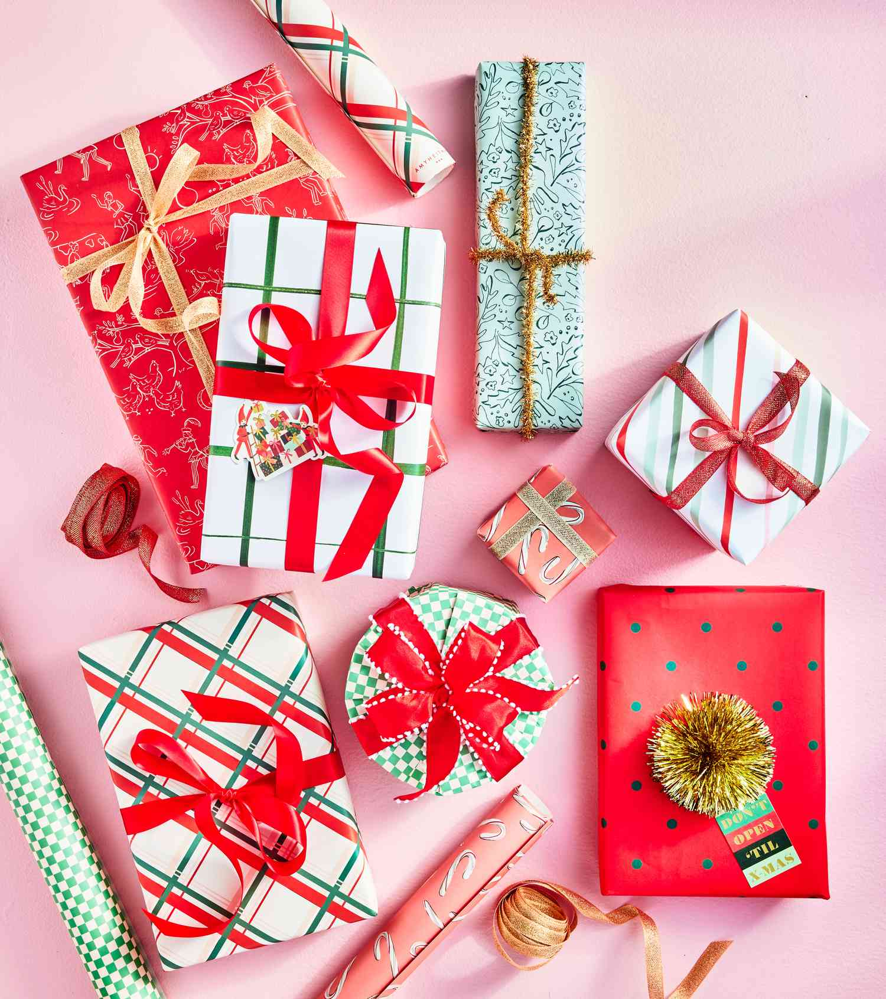

Creative DIY Gift Wrapping
Make your gifts stand out this holiday season with creative and personalized wrapping ideas.
1. Festive Paper & Ribbons
Use holiday-themed wrapping paper and colorful ribbons to add flair to every present.
2. Personalized Tags
Create custom gift tags with names, stickers, or festive illustrations for a personal touch.
3. DIY Ornaments
Add small ornaments, bells, or pinecones as decorations on top of wrapped gifts.
4. Fabric Wrapping
Try using scarves, tea towels, or festive cloth for eco-friendly and stylish wrapping.
5. Creative Shapes
Wrap gifts in unique shapes or boxes, or use layered tissue paper to make unwrapping fun.